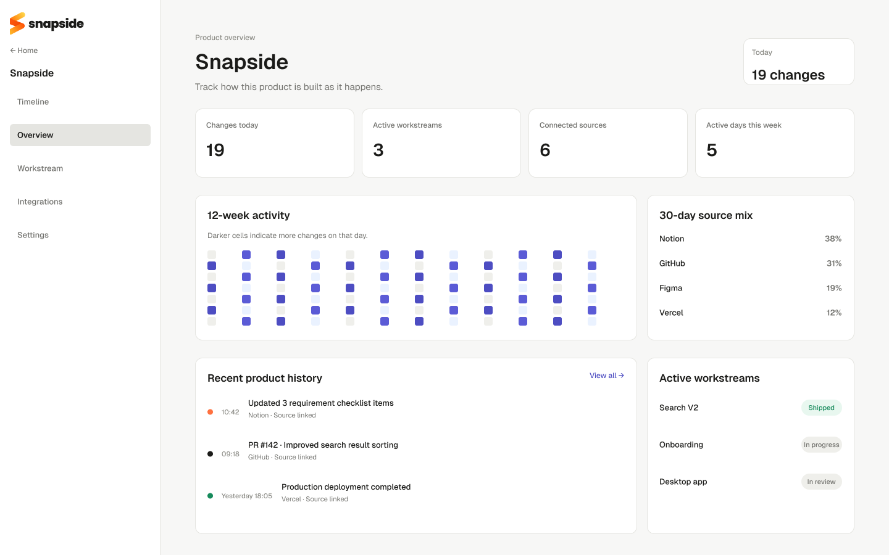
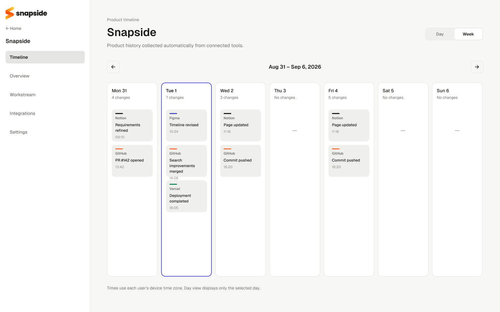
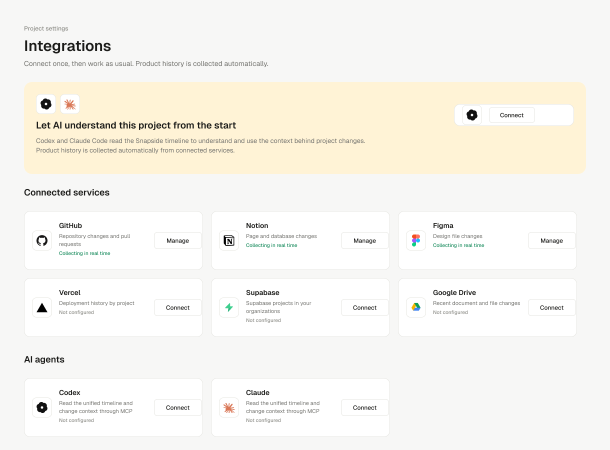
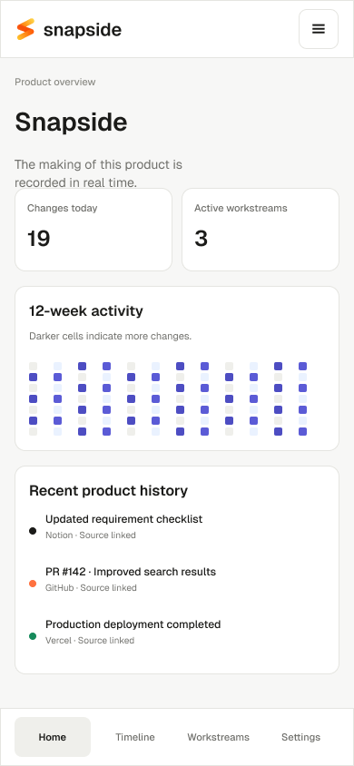
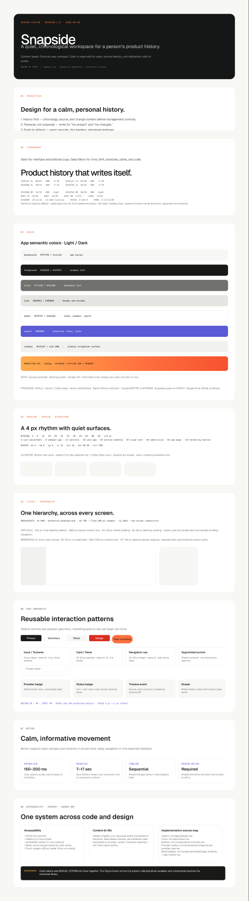

Product History Platform
Snapside
プロダクトが作られるすべての瞬間を、
一つのHistoryにまとめる。
普段使うツールを一度接続すると、分散した変更を自動で収集し、時系列とWorkstreamで確認できるProduct History Platformです。

01 / Background
一つのプロダクトを、
複数のツールで作っている。
企画、デザイン、コード、データ、配信の記録は各サービスに残ります。しかし、プロダクト全体で何がいつ変わったかを確認するには、それぞれを開き直す必要があります。
Each tool remembers its own activity.プロダクト全体の変更理由と流れは、どこにも残らない。
02 / Problem
記録は存在する。
プロダクトの文脈が見えない。
新しい管理作業を追加せず、すでに各ツールで発生している変更からProduct Historyを構成する必要がありました。
変更が分散する
計画、画面、コード、配信の履歴が異なるサービスに保存される。
理由を探し直す
時間が経つと、何を変更したかだけでなく、その判断の背景も失われる。
手動記録が続かない
製品を作る作業とは別に、日報や作業ログを書く負担が生まれる。
結果だけが残る
完成画面だけでは、問題解決の過程と個人のContributionを説明しにくい。
AIも文脈を失う
AI Coding Toolが複数サービスの最新状態を一度に参照できない。
どうすれば新しい記録行動を求めずに、分散した変更を一つの製品史として残せるか。
03 / Research & Insight
ユーザーは記録するためではなく、
プロダクトを作るために作業する。
作業日誌の入力を習慣化させるのではなく、既存ツールで自然に発生するActivityをSourceとして扱う方針に変えました。
記憶と入力に依存し、忙しい時ほど記録が抜ける。
すでに発生した変更を自動収集し、確認だけをユーザーに残す。
Core insight
意味のあるHistoryは、Activityの量ではなく、Source・時間・作業目的を一緒に読める状態から生まれる。
04 / Design Principles
収集は自動に。
確認はSourceに戻れる形に。
大量の変更を派手に見せるのではなく、個人が必要な時に経緯を読み直せる静かなインターフェースを基準にしました。
プロジェクトに一度接続すると、その後の変更を自動で収集する。
各イベントから元ページ、File、Commit、Deploymentへ戻れる。
異なる形式の変更を、時間を共通軸として読み直す。
チーム報告より、個人の判断・成長・Contributionを中心にする。
多くのイベントを密度高く、優先順位を崩さず表示する。
05 / Information Architecture
Projectを中心に、
時間・目的・接続状態を分ける。
Timelineにすべてを詰め込まず、全体状態はOverview、時系列はTimeline、機能単位の流れはWorkstreamsで確認する構造にしました。
06 / Core User Flow
一度接続し、
作業のたびにHistoryが更新される。
初期設定以降は記録のための操作を要求しません。ユーザーはWeekly TimelineやWorkstreamを読み、必要な時だけ原文に戻ります。
- 01Create project
製品単位のContextを作る。
- 02Connect sources
普段使うServiceを選ぶ。
- 03Import history
既存の変更を取り込む。
- 04Collect changes
新しいActivityを自動収集。
- 05Review timeline
週・日単位で流れを読む。
- 06Open workstream
機能単位で経緯を追う。
- 07Use with AI
MCPから最新Contextを読む。
No extra logging stepユーザーの主な操作は「接続」と「確認」。Historyを書くための入力画面をCore Flowに置かない。
07 / System Model
形式の違うActivityを、
同じProduct Eventへ変換する。
MCPがHistoryを書くのではありません。各Integrationから収集・正規化されたHistoryを、CodexやClaude Codeが読み、プロジェクトのContextとして利用します。
SourcesNotion pageFigma fileGit commit / PRVercel deploymentSupabase / Drive
→NormalizeSourceActorTimestampChange typeOriginal link
→Product HistoryTimelineWorkstreamOverview
→Read via MCPCodexClaude Code
08 / Interaction Detail
「更新された」ではなく、
何が変わったかを見せる。
Notion Activityは更新時刻だけでは判断できません。前回Snapshotと現在の状態を比較し、追加・削除・修正を分けて表示します。
+ 3 added- 1 removed~ 2 modified
変更量が多い時は要約を先に表示する。
BlockとPropertyの詳細は展開して確認する。
元のNotion Pageへ移動するLinkを保持する。
09 / Key Screens
画面は役割ごとに分け、
同じEvent modelを共有する。
Overviewでは全体状態、Timelineでは変更の順序、Integrationsでは収集元を確認します。Mobileでは履歴の確認と原文への移動を優先しました。



10 / Design System
ブランドは暖かく、
履歴画面は静かに。
Orange Gradientはブランドと重要な進行状態に限定し、記録を読む面はWhiteとCharcoalを中心に構成しました。

Primitive#FF5314#FF9F20#FFD25A#18181A#FFFFFF
→SemanticBrandForegroundSurfaceBorderStatus
→ComponentButtonInputTabsBadgeCardModalTooltipNavigation
Interaction states Hover、Focus、Loading、Error、Disabledを共通Tokenで管理し、Light / Dark modeのContrastを同じSemantic roleで維持する。
11 / Outcome & Retrospective
結果だけでなく、
作ってきた過程を説明できる。
定量成果を作らず、現在実装した体験と、次に検証する課題を分けて整理しました。
複数Serviceの変更を一つの時系列で確認する。
各Eventから元の記録へ戻り、Contextを確認する。
異なるToolの変更を機能と作業目的でまとめる。
収集済みHistoryをAI Toolが読み、最新のProject Contextとして使う。
Activity FeedとProduct Historyは違う。
Eventを時系列に並べるだけでは、変更の目的とまとまりは伝わりません。Sourceを保ちながらWorkstreamへ束ねる設計が必要でした。
自動分類と情報量のBalanceを検証する。
AIによる変更要約とWorkstream分類を強化しながら、誤分類を直せるControlと、過剰な通知を防ぐ密度設計を検証します。
Scope note — 利用者数、時間削減、満足度などの未検証指標は掲載していません。